Chapter 9: Advanced Plotting
“The commonality between science and art is in trying to see profoundly - to develop strategies of seeing and showing.”
— Edward Tufte
Once again, we will turn to our friend ggplot2 to plot; but now, we are going to take it to another level. We will use many of the options that this powerful package provides and discuss briefly some important aspects of a good plot.
We will go through several aspects of the code that makes plotting in R flexible and beautiful.
- Types of plots
- Color schemes
- Themes
- Labels and titles
- Facetting
To highlight these features we’ll be using our NHANES data again; specifically, sedentary behavior, depression, asthma, family size, and race. As this is only an introduction, refer to http://docs.ggplot2.org/current/ for more information on ggplot2.
To begin, it needs to be understood that the first line where we actually use the ggplot function, will then apply to all subsequent laters (e.g., geom_point()). For example,
ggplot(df, aes(x = dep, y = sed, group = asthma))means for the rest of the layers, unless we over-ride it, each will use df with dep as the x variable, sed as the y, and a grouping on asthma. So when many layers are going to use the same command put it in this so you don’t have to write the same argument many times. A common one here could be:
ggplot(df, aes(x = dep, y = sed, group = asthma, color = asthma))since we often want to color by our grouping variable.
Before going forward, a nice feature of ggplot2 allows us to use an “incomplete” plot to add on to. For example, if we have a good idea of the main structure of the plot but want to explore some changes, we can do the following:
p1 <- ggplot(df, aes(x = dep, y = sed, group = asthma)) +
geom_point()
p1## Warning: Removed 18 rows containing missing values (geom_point).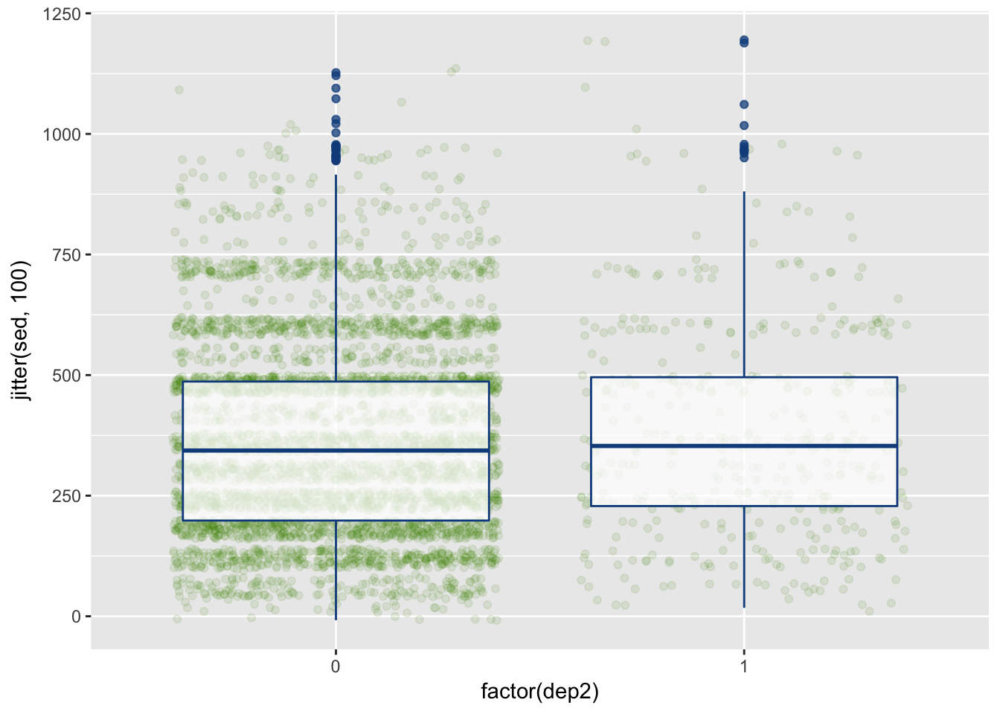 So now p1 has the information for this basic, and honestly fairly uninformative, plot. We’ll use this feature to build on plots that we like.
Some of our figures will also need summary data so we’ll start that here as well:
summed_data <- df %>%
group_by(asthma, dep2) %>%
summarize(s_se = sd(sed, na.rm=TRUE)/sqrt(n()),
sed = mean(sed, na.rm=TRUE),
N = n())As you hopefully recognize a bit, we are summarizing the time spent being sedentary by both asthma and the dichotomous depression variables. If it doesn’t make sense at first, read it line by line to see what I did. This will be useful for several types of plots.
Types of Plots
Scatterplots
We’ll start with a scatterplot–one of the most simple yet informative plots.
ggplot(df, aes(x = dep, y = sed, group = asthma)) +
geom_point(aes(color = asthma))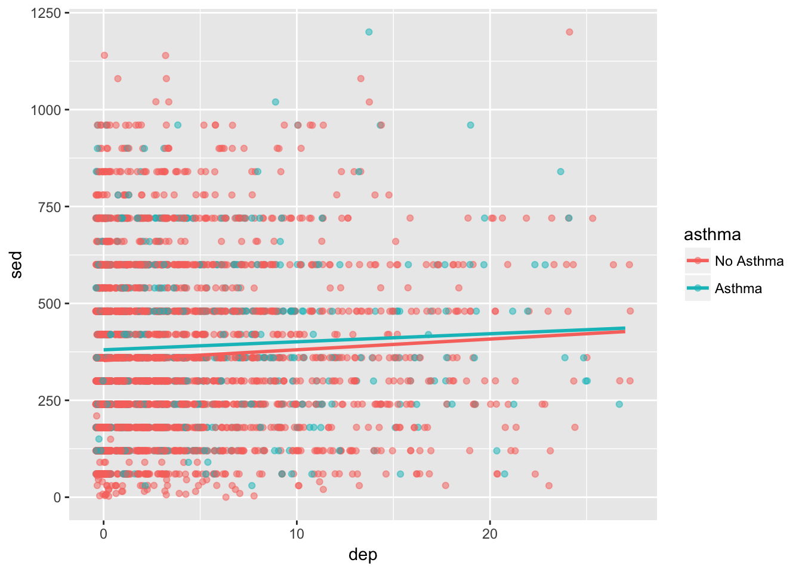
It’s not amazing. There looks to be a lot of overlap of the points. Also, it would be nice to know general trend lines for each group. Below, alpha refers to how transparent the points are, method = "lm" refers to how the line should be fit, and se=FALSE tells it not to include error ribbons.
ggplot(df, aes(x = dep, y = sed, group = asthma)) +
geom_jitter(aes(color = asthma), alpha = .5) +
geom_smooth(aes(color = asthma), method = "lm", se=FALSE)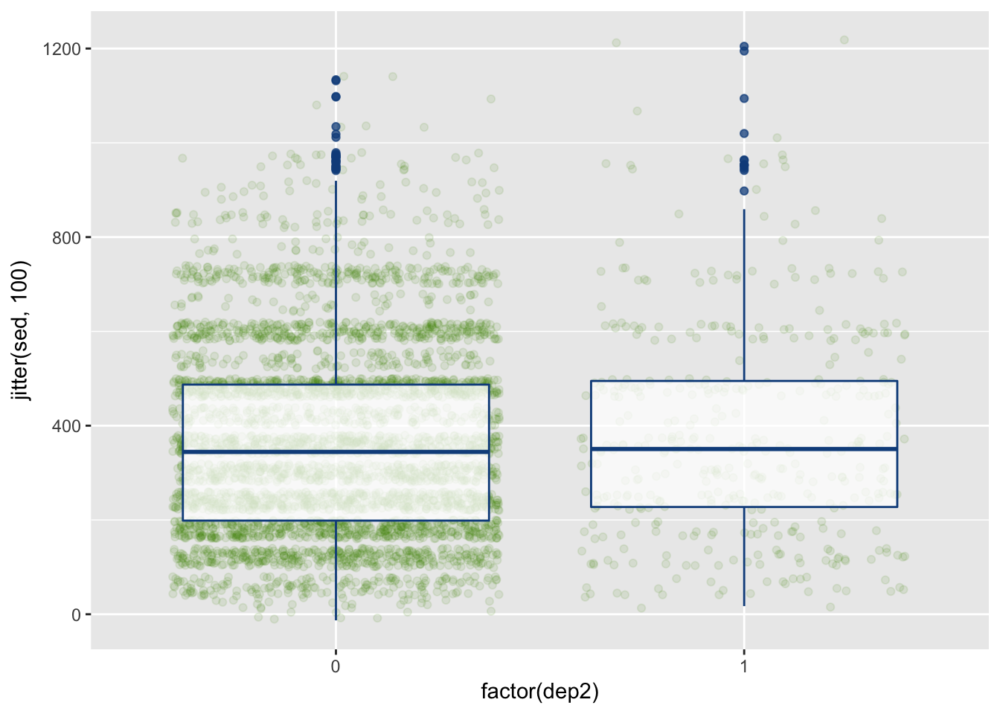
It’s getting better but we could still use some more features. We’ll come back to this in the next sections.
Boxplots
Box plots are great ways to assess the variability in your data. Below, we create a boxplot but change p1’s x variable so that it is the factor version of depression.
ggplot(df, aes(x = factor(dep2), y = sed)) +
geom_boxplot()This plot is, at best, mediocre. But there’s more we can do.
ggplot(df, aes(x = factor(dep2), y = jitter(sed, 100))) +
geom_jitter(alpha = .1, color = "chartreuse4") +
geom_boxplot(alpha = .75, color = "dodgerblue4") 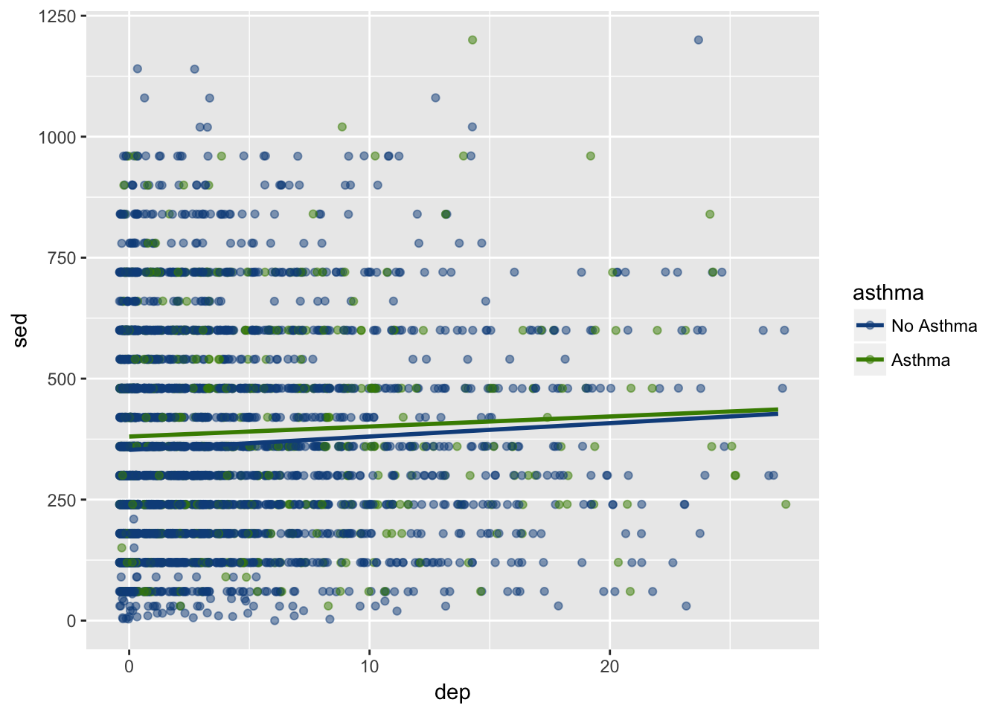
This now provides the (jittered) raw data points as well to hightlight the noise and the number of observations in each group.
Bar Plots
Bar plots are great ways to look at means and standard deviations for groups.
ggplot(summed_data, aes(x = dep2, y = sed, group = asthma)) +
geom_bar(aes(fill = asthma), stat = "identity", position = "dodge")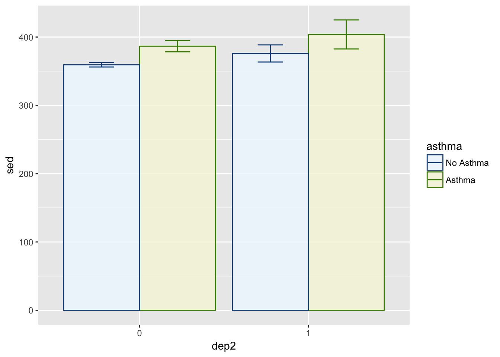
We used stat = "identity" to make it based on the mean (default is count), and position = "dodge" makes it so the bars are next to each other as opposed to stacked. Let’s also add error bars.
p = position_dodge(width = .9)
ggplot(summed_data, aes(x = dep2, y = sed, group = asthma)) +
geom_bar(aes(fill = asthma),
stat = "identity",
position = p,
alpha = .8) +
geom_errorbar(aes(ymin = sed - s_se, ymax = sed + s_se,
color = asthma),
position = p,
width = .3)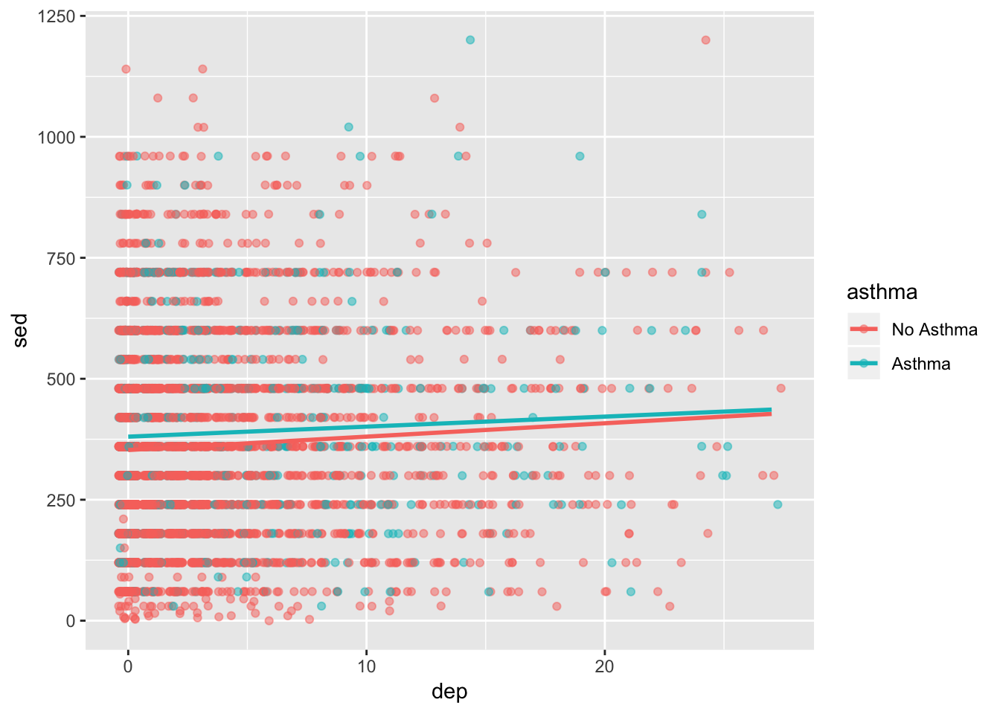
There’s a lot in there but much of it is what you’ve seen before. For example, we use alpha in the geom_bar() to tell it to be slightly transparent so we can see the error bars better. We used the position_dodge() function to specify exactly how much dodge we wanted. In this way, we are able to line up the error bars and the bars. If we just use position = "dodge" we have less flexibility and control.
Much more can be done to clean this up, which we’ll show in later sections.
Line Plots
Line plots are particularly good at showing trends and relationships. Below we we use it to highlight the relationship between depression, sedentary behavior, and asthma.
ggplot(summed_data, aes(x = dep2, y = sed, group = asthma)) +
geom_line(aes(color = asthma))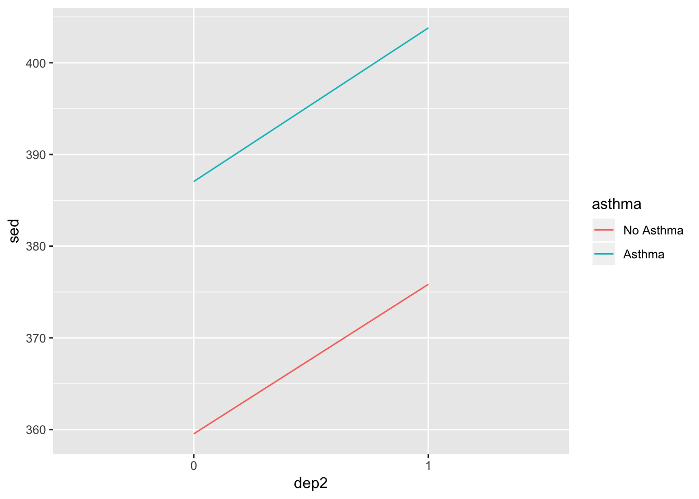
Good start, but let’s add some features.
pos = position_dodge(width = .1)
ggplot(summed_data, aes(x = dep2, y = sed, group = asthma, color = asthma)) +
geom_line(position = pos) +
geom_point(position = pos) +
geom_errorbar(aes(ymin = sed - s_se, ymax = sed + s_se),
width = .1,
position = pos)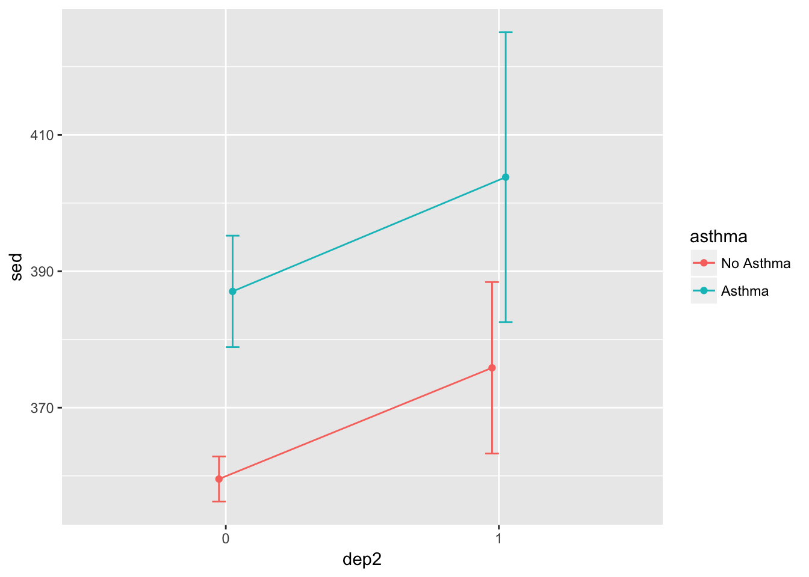
That looks a bit better. From here, let’s go on to color schemes to make the plots a bit better.
Color Schemes
We’ll start by using the scatterplot we made above but we will change the colors a bit using scale_color_manual().
ggplot(df, aes(x = dep, y = sed, group = asthma)) +
geom_jitter(aes(color = asthma), alpha = .5) +
geom_smooth(aes(color = asthma), method = "lm", se=FALSE) +
scale_color_manual(values = c("dodgerblue4", "chartreuse4"))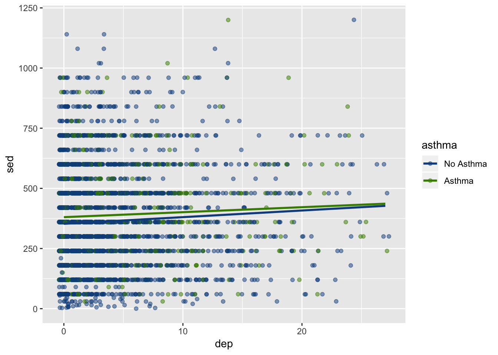 Depending on your personal taste, you can adjust it with any color. On my blog, I’ve posted the colors available in R (there are many).
Advice: Don’t get too lost in selecting colors but it can add a nice touch to any plot. The nuances of plot design can be invigorating but also time consuming to be smart about how long you spend using it.
Next, let’s adjust the bar plot. We will also add some colors here, but we will differentiate between “color” and “fill”.
- Fill fills in the object with color. This is useful for things that are more than simply a line or a dot.
- Color colors the object. This outlines those items that can also be filled and colors lines and dots.
p = position_dodge(width = .9)
ggplot(summed_data, aes(x = dep2, y = sed, group = asthma)) +
geom_bar(aes(fill = asthma, color = asthma),
stat = "identity",
position = p,
alpha = .8) +
geom_errorbar(aes(ymin = sed - s_se, ymax = sed + s_se,
color = asthma),
position = p,
width = .3) +
scale_color_manual(values = c("dodgerblue4", "chartreuse4")) + ## controls the color of the error bars
scale_fill_manual(values = c("aliceblue", "beige"))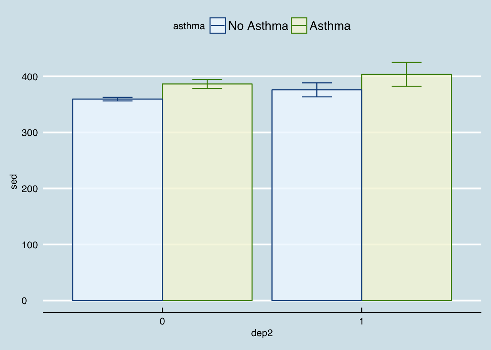
Just so you are aware:
- aliceblue is a lightblue
- beige is a light green
- dodgerblue4 is a dark blue
- chartreuse4 is a dark green
So the fill colors are light and the color colors are dark in this example. You, of course, can do whatever you want color-wise. I’m a fan of this style though so we will keep it for now.
These same functions can be used on the other plots as well. Feel free to give them a try. As for the book, we’ll move on to the next section: Themes.
Themes
Using the plot we just made–the bar plot–we will show how theme options work. There are several built in themes that change many aspects of the plot (e.g., theme_bw(), theme_classic(), theme_minimal()). There are many more if you download the ggthemes package. Fairly simply you can create plots similar to those in newspapers and magazines.
First, we are going to save the plot to simply show the different theming options.
p = position_dodge(width = .9)
p1 = ggplot(summed_data, aes(x = dep2, y = sed, group = asthma)) +
geom_bar(aes(fill = asthma, color = asthma),
stat = "identity",
position = p,
alpha = .8) +
geom_errorbar(aes(ymin = sed - s_se, ymax = sed + s_se,
color = asthma),
position = p,
width = .3) +
scale_color_manual(values = c("dodgerblue4", "chartreuse4")) + ## controls the color of the error bars
scale_fill_manual(values = c("aliceblue", "beige"))Theme Black and White
p1 +
theme_bw()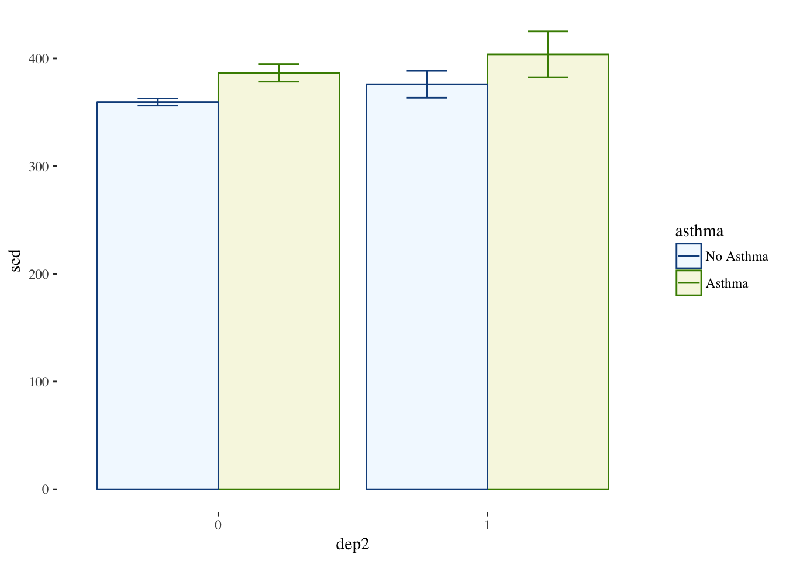
Theme Classic
p1 +
theme_classic()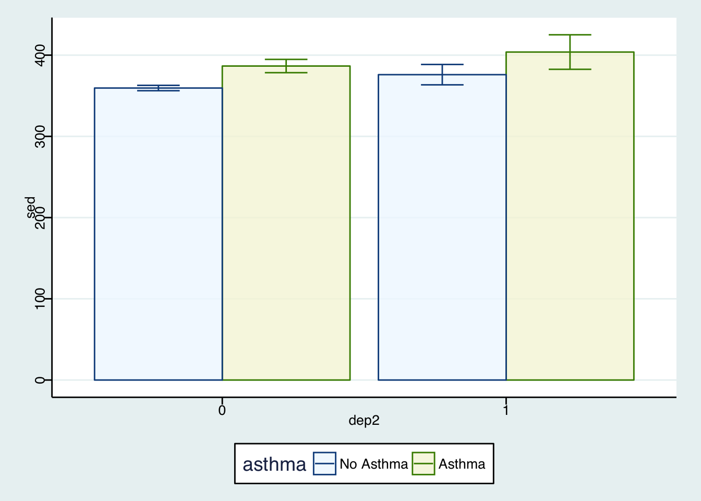
Theme Minimal
p1 +
theme_minimal()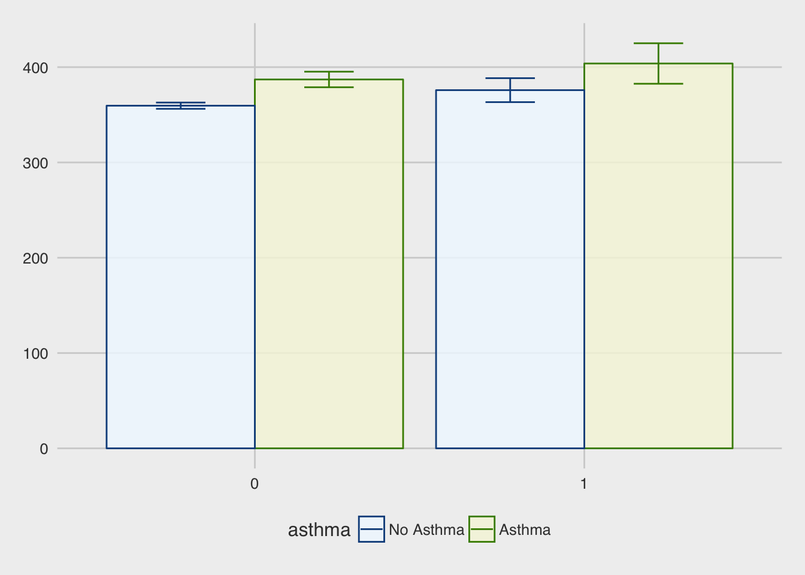
Theme Economist (from ggthemes)
library(ggthemes)
p1 +
theme_economist()
Theme FiveThirtyEight (from ggthemes)
p1 +
theme_fivethirtyeight()Theme Tufte (from ggthemes)
p1 +
theme_tufte()
Theme Stata (from ggthemes)
p1 +
theme_stata()
Your Own Theme
There are many more but you get the idea. In addition to the built in themes, you can use the theme() function and make your own adjustments. There are many options so we will just introduce the idea.
p1 +
theme(legend.position = "bottom", ## puts legend at the bottom of figure
legend.background = element_rect(color = "lightgrey"), ## outlines legend
panel.background = element_rect(fill = "grey99", ## fills the plot with a very light grey
color = "grey70"), ## light border around plot
text = element_text(family = "Times")) ## all text in plot is now Times
There are many more options but essentially if there is something you want to change, you probably can.
Labels and Titles
Using our last plot, we will also want to add good labels and/or titles.
p1 +
theme(legend.position = "bottom",
legend.background = element_rect(color = "lightgrey"),
panel.background = element_rect(fill = "grey99",
color = "grey70"),
text = element_text(family = "Times")) +
labs(y = "Sedentary Behavior (Minutes)",
x = "Depression (1 = Depressed)",
title = "Comparison of Sedentary Behavior",
subtitle = "across Depression and Asthma")
Facetting
Facetting is very useful when trying to compare more than three variables at a time or you cannot use color or shading. It is often useful and beautiful. Facetting splits the data based on some grouping variable (e.g., asthma) to highlight differences in the relationship.
p1 +
theme(legend.position = "bottom",
legend.background = element_rect(color = "lightgrey"),
panel.background = element_rect(fill = "grey99",
color = "grey70"),
text = element_text(family = "Times")) +
labs(y = "Sedentary Behavior (Minutes)",
x = "Depression (1 = Depressed)",
title = "Comparison of Sedentary Behavior",
subtitle = "across Depression and Asthma") +
facet_grid(~asthma)
You can facet by more than one variable and it will create separate panels for each combination of the facetting variables.
Conclusions
This was a quick demonstration of plotting with ggplot2. There is so much more you can do. However, in the end, exploring and communicating the data through plots is simply something you need to practice. With time, you can a priori picture the types of plots that will highlight things in your data, the ways you can adjust it, and how you need to manipulate your data to make it plot ready. Be patient and have fun trying things. In my experience, almost anytime I think, “Can R do this?”, it can, so try to do cool stuff and you’ll probably find that you can.